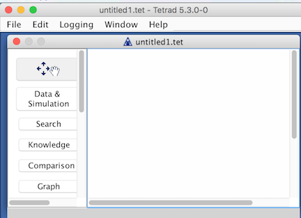
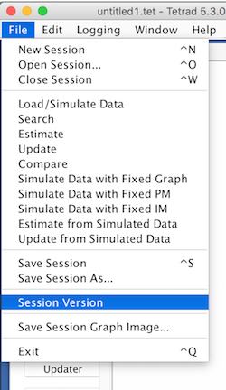

Tetrad Versioning |
In general, saved sessions for Tetrad are intended to be backwards compatible, although with major code releases, so much of the code changes that this is not possible. Versions 5.4.* will not be backwards compatiable with versions 5.3. For this, we apologize; we can only excuse ourselves by pointing out that we have a very small development team, and the codebase is large and multi-pronged, and we are using Java serialization, which is fast and accurate but finicky. Neverthless, we will try to make sure all versions 5.4* are backwards compatible within the 5.4.* series.
It may halp to know the exact version of the Tetrad softward you are using, for two reasons:
To find out which exact version of Tetrad you are using, you may use one of three methods.
In most operating systems, the version number is displayed in the title bar above the application. In the example below, it's "5.3.0-0". The "4" in this case is the major version, the first "3" the minor version, the "2" the minor subversion, and the "3" the incremental release number. This appears in the title bar like this:

You can also find the version number by selecting "Session Version" from the main File menu:

Each saved ".tet" file is stamped with a version and a date in such a way that, even if the file itself cannot be loaded, at least this meta-information can be loaded. So if you have a file that won't load, you can still see the version it was saved under and the date it was saved. This allows you to go to the Tetrad website and launch the version of Tetrad that was used to save out the file. You can then load the file under that version.